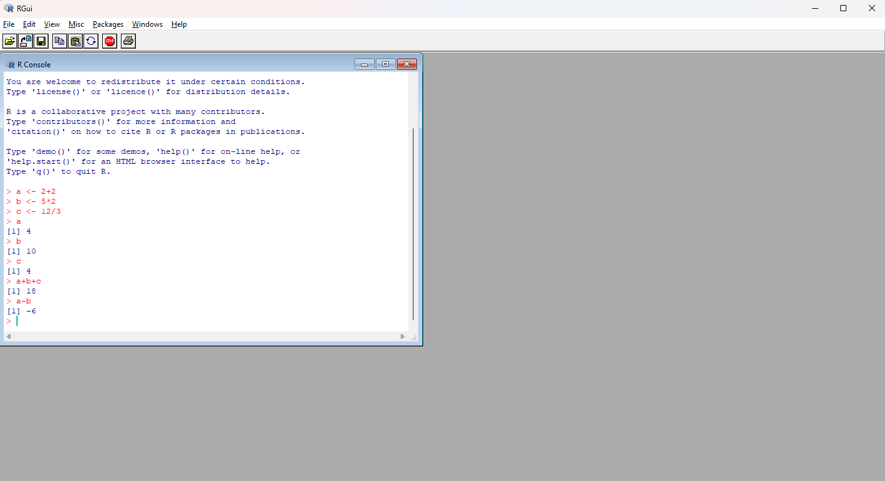

The R Project for Statistical Computing
Getting Started
R is a free software environment for statistical computing and graphics (free as in freedom!).
It runs on a wide variety of UNIX-like platforms (e.g. Linux, MacOS) and Windows.
R Download
You can download R via the The Comprehensive R Archive Network (CRAN). CRAN is a network of ftp and web servers around the world that store identical, up-to-date, versions of code and documentation for R.
You should download and install the R version according to your operating system:
The R environment
R is an integrated suite of software facilities for data manipulation, calculation and graphical display. It includes:
- An effective data handling and storage facility
- A suite of operators for calculations on arrays, in particular matrices
- A large, coherent, integrated collection of intermediate tools for data analysis
- Graphical facilities for data analysis and display either on-screen or on hardcopy
- A well-developed, simple and effective programming language which includes conditionals, loops, user-defined recursive functions, and input and output facilities
The term “environment” is intended to characterize it as a fully planned and coherent system, rather than an incremental accretion of very specific and inflexible tools, as is frequently the case with other data analysis software.
How to use R
Linux CLI
If you are familiar with Linux, after installing you can open R directly from the command line interface by typing R and running the command with ENTER:
$ R
R version 4.5.2 (2025-10-31) -- "[Not] Part in a Rumble"
Copyright (C) 2025 The R Foundation for Statistical Computing
Platform: x86_64-redhat-linux-gnu
R is free software and comes with ABSOLUTELY NO WARRANTY.
You are welcome to redistribute it under certain conditions.
Type 'license()' or 'licence()' for distribution details.
Natural language support but running in an English locale
R is a collaborative project with many contributors.
Type 'contributors()' for more information and
'citation()' on how to cite R or R packages in publications.
Type 'demo()' for some demos, 'help()' for on-line help, or
'help.start()' for an HTML browser interface to help.
Type 'q()' to quit R.
>After the > is where you type the a specific R command, for example, a simple math problem 2+2, and then press ENTER which will print you the output 4, after the line number of the print output [1]:
> 2+2
[1] 4You can also store those values in an object that you can name anything you want, in this case, a, b, and c:
a <- 2+2
b <- 5*2
c <- 12/3> a
[1] 4
> b
[1] 10
> c
[1] 4
> a+b+c
[1] 18
> a-b
[1] -6You can also save the sequence of commands in a script, basically a text file that is saved with the .R extension, and run it in bash using:
Rscript sum_example.RThe R User Interface
The base R come with a standard version of a Graphical User Interface (GUI), found at the instalation folder /bin/Rgui.exe

However, this interface is very simple, and not ideal for editing scripts. For that, integrated development environment (IDE) can be used, which offer sets of tools built to help you be more productive.
Integrated Development Environment (IDE)
For most users that have no previous experience in programming RStudio IDE has been the standard IDE of choice.
More recently, Positron, a more flexible IDE has been developed by Posit, the company who wrote RStudio, which is based on the open source repository of Microsoft Visual Studio Code (Code - OSS). This IDE can also be used for other programming languages, including python, Nextflow scripts, bash scripts, quarto documents, and markdown files. It shares the same extensions marketplace as VSCode, making it even more flexible. One advantage of Positron compared to VSCode, is that was build with an aim on data analysis, so data visualization tools that are already integrated with the software.
Here I will show where to find and how to install both of them. You can choose whichever you want, or any other IDE that supports R in case you are familiar with another particular IDE.
RStudio
RStudio can be dowloaded here
RStudio Panes
The Source pane is where you can edit and save R or Python scripts or author computational documents like Quarto and R Markdown.
The Console pane is used to write short interactive R commands.
The Environment pane displays temporary R objects as created during that R session.
The Output pane displays the plots, tables, or HTML outputs of executed code along with files saved to disk.

You can run and entire script by clicking the source button at the upper-right corner of the source pane. Alternatively, you can run the script interactively line by line by pressing Ctrl + ENTER.
Detailed guides on RStudio can be found here
Positron
Positron can be dowloaded here
Positron might be a good fit for you if you
use VS Code for data science (Python or R) but wish it included more interactive affordances for data-specific tasks like running exploratory code, examining your variables and datasets, interacting with your plots, and developing data apps such as Shiny, Streamlit, or FastAPI.
use JupyterLab or hosted notebook tools for data science (Python or R) and are ready for a more powerful, fully-featured IDE that still supports notebooks.
use RStudio and want more ability to customize or extend your IDE.
use additional languages beyond only Python or R in your day-to-day data science or package development work, like Rust, C++, JavaScript, or Lua.
want access to powerful, data-science specific AI integrations in a modern, extensible IDE.
Positron’s user interface (UI) should feel familiar to RStudio users, but there are also changes to get used to. First, let’s take a high-level, side-by-side view of the two IDEs. This figure highlights the role each area plays in your workflow and draws similarities between Positron and RStudio. You write code in an editor, run your code in the Console, and view outputs like plots, variables, and reports in dedicated panes or tabs.

However, there are few differences.

Two specific UI elements are the most novel for RStudio users:
The Activity Bar provides access to different functional capabilities of Positron. Clicking here switches what appears in the Primary Side Bar.
The Primary Side Bar displays context-specific content based on which icon is clicked in the Activity Bar.
R Packages
Many users think of R as a statistics system. We prefer to think of it as an environment within which statistical techniques are implemented. R can be extended (easily) via packages. There are about eight packages supplied with the R distribution and many more are available through the CRAN family of Internet sites covering a very wide range of modern statistics.
You can install CRAN packages directly using the following R command:
# Install from CRAN
# install.packages("NAME_OF_THE_PACKAGE")
# Example:
install.packages("ggplot2") # Package that we will use for data visualizationR Packages for Bioinformatics
Although some R packages used in bioinformatics can be found in CRAN, most of them are available at Bioconductor.
The mission of the Bioconductor project is to develop, support, and disseminate free open source software that facilitates rigorous and reproducible analysis of data from current and emerging biological assays.
To install a Bioconductor package, first you need to install the BiocManager package from CRAN.
install.packages("BiocManager")Then, you install the packages using the following command:
# BiocManager::install("NAME_OF_BIOCONDUCTOR_PACKAGE")
BiocManager::install("GenomicFeatures")We use :: to specify that we want to run the function install() directly from the BiocManager package, as sometimes two or more loaded packages can have the same name for a function, creating conflicts.